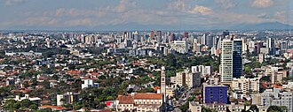

Curitiba é a capital do estado do Paraná, situada a 940 metros do nível do mar, com uma população aproximada de 1 milhão 800 mil habitantes, sendo a maior cidade do sul do brasil, sua região metropolitana possui cerca de 3 milhões e 500 mil habitantes, considerada um forte polo industrial e ecônomico do Brasil.
Destacada por seu clima instável, nublado e chuvoso, apresenta-se como a capital mais fria do Brasil, seus habitantes carregam um sotaque e gírias bem destacado. A cidade de Curitiba destaca-se por ser ter um urbanismo planejado, focalizando em parques e áreas de lazer, um modal de transporte público rodoviário utilizado como modelo por muitos países
